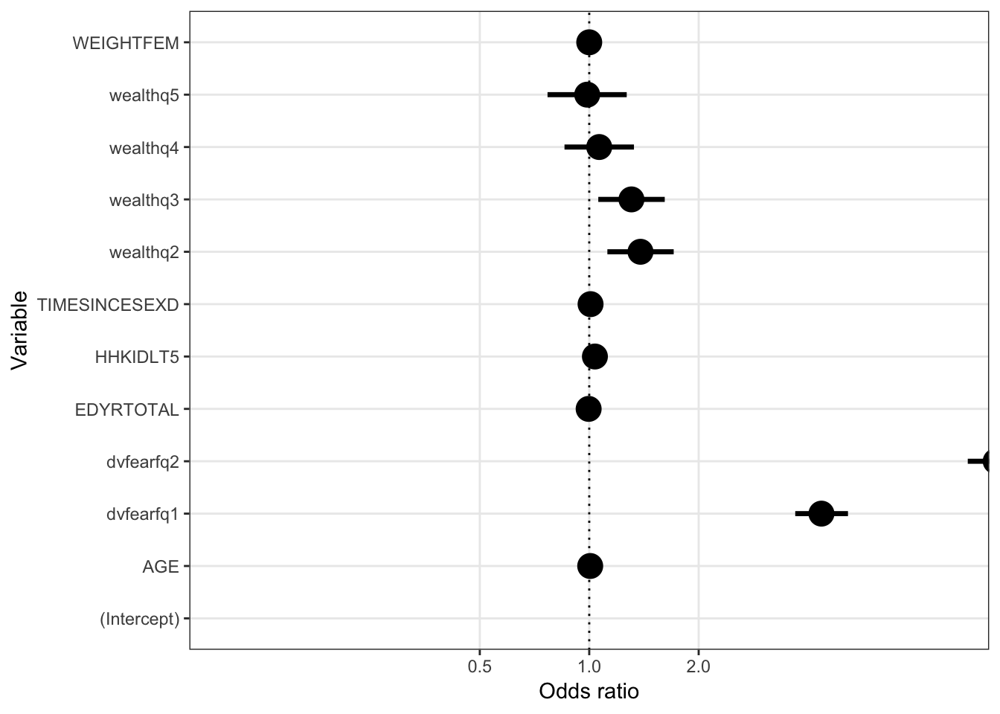
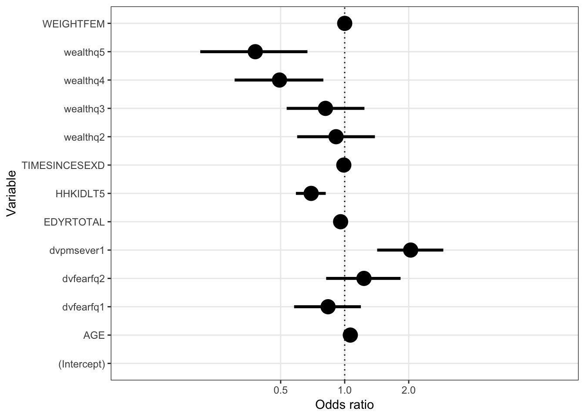

Welcome!
SDS 291: Multiple Regression Final Research Project:
Mapping Domestic Violence: Drawing connections between lifestyle predictors and likelihood of becoming a victim of domestic violence
In an effort to contribute to research regarding domestic violence, this project aims to find lifestyle factors that may used as indicators to determine the likelihood that a woman will experience severe domestic violence from her husband or partner. These indicators can be used to define “at risk” groups and gives governments and organizations the trends necessary to establish programs and allocate funds for these demographics. Data collected from women (ages 15-49) living Tanzania in 2015 was used to answer this question. Several lifestyle factors were analyzed to determine what may or may not be an indicator variable when predicting likelihood of domestic violence; these factors include: weight (kg); age; the number of young children (under age 5) living in the household; household wealth (divided into quintiles ranging from poorest to richest); total education (years); how recently the respondent had sexual intercouse (days); how frequent a woman is afraid of her husband or partner; how frequent a woman’s husband or partner drinks alcohol.
logm = glm(dvpmsever~EDYRTOTAL+wealthq+WEIGHTFEM+HHKIDLT5+AGE+TIMESINCESEXD+dvfearfq,data=ipum_primary,family=binomial)exp(confint(logm))## Waiting for profiling to be done...## 2.5 % 97.5 %
## (Intercept) 0.02660668 0.05677674
## EDYRTOTAL 0.97521293 1.01787781
## wealthq2 1.12176113 1.70737072
## wealthq3 1.05899020 1.61330131
## wealthq4 0.85496080 1.32752099
## wealthq5 0.76786771 1.26805236
## WEIGHTFEM 0.99984436 1.00007173
## HHKIDLT5 0.97548246 1.10051893
## AGE 0.99799922 1.01427883
## TIMESINCESEXD 1.00313839 1.01374323
## dvfearfq1 3.68686212 5.14931615
## dvfearfq2 10.99593180 15.70188624library(broom)
preds1 <- tidy(logm, conf.int = TRUE, exponentiate = TRUE)
ggplot(preds1, aes(y = estimate, x = term)) +
geom_pointrange(aes(ymin = conf.low, ymax = conf.high),
size = 1.2) +
geom_hline(yintercept = 1.0, linetype = "dotted", size = .5) +
scale_y_log10(breaks = c(0.5, 1.0, 2.0),
minor_breaks = NULL) +
labs(y = "Odds ratio", x = "Variable") +
coord_flip(ylim = c(0.1, 10)) +
theme_bw()
logm2 = glm(dvdrunksfq~dvpmsever+EDYRTOTAL+wealthq+WEIGHTFEM+HHKIDLT5+AGE+TIMESINCESEXD+dvfearfq,data=ipum_second,family=binomial)
summary(logm2)##
## Call:
## glm(formula = dvdrunksfq ~ dvpmsever + EDYRTOTAL + wealthq +
## WEIGHTFEM + HHKIDLT5 + AGE + TIMESINCESEXD + dvfearfq, family = binomial,
## data = ipum_second)
##
## Deviance Residuals:
## Min 1Q Median 3Q Max
## -0.8185 -0.2487 -0.1825 -0.1370 3.3398
##
## Coefficients:
## Estimate Std. Error z value Pr(>|z|)
## (Intercept) -4.773e+00 4.215e-01 -11.325 < 2e-16 ***
## dvpmsever1 7.142e-01 1.824e-01 3.915 9.05e-05 ***
## EDYRTOTAL -4.439e-02 2.277e-02 -1.949 0.05127 .
## wealthq2 -9.376e-02 2.141e-01 -0.438 0.66145
## wealthq3 -2.080e-01 2.142e-01 -0.971 0.33161
## wealthq4 -7.059e-01 2.442e-01 -2.891 0.00385 **
## wealthq5 -9.682e-01 2.947e-01 -3.285 0.00102 **
## WEIGHTFEM 2.586e-05 1.126e-04 0.230 0.81839
## HHKIDLT5 -3.631e-01 8.237e-02 -4.408 1.04e-05 ***
## AGE 6.076e-02 9.038e-03 6.723 1.78e-11 ***
## TIMESINCESEXD -9.690e-03 6.048e-03 -1.602 0.10911
## dvfearfq1 -1.803e-01 1.841e-01 -0.979 0.32745
## dvfearfq2 2.084e-01 2.052e-01 1.015 0.30990
## ---
## Signif. codes: 0 '***' 0.001 '**' 0.01 '*' 0.05 '.' 0.1 ' ' 1
##
## (Dispersion parameter for binomial family taken to be 1)
##
## Null deviance: 1820.6 on 7596 degrees of freedom
## Residual deviance: 1676.2 on 7584 degrees of freedom
## AIC: 1702.2
##
## Number of Fisher Scoring iterations: 7exp(confint(logm2))## Waiting for profiling to be done...## 2.5 % 97.5 %
## (Intercept) 0.003640229 0.01901151
## dvpmsever1 1.421281692 2.90858276
## EDYRTOTAL 0.915077254 1.00061043
## wealthq2 0.597653242 1.38689525
## wealthq3 0.533486986 1.23823541
## wealthq4 0.303664379 0.79347056
## wealthq5 0.209340206 0.66807929
## WEIGHTFEM 0.999710530 1.00019685
## HHKIDLT5 0.589627277 0.81430250
## AGE 1.044199979 1.08188778
## TIMESINCESEXD 0.978451649 1.00195888
## dvfearfq1 0.578063368 1.19136131
## dvfearfq2 0.818108675 1.83101501preds2 <- tidy(logm2, conf.int = TRUE, exponentiate = TRUE)
ggplot(preds2, aes(y = estimate, x = term)) +
geom_pointrange(aes(ymin = conf.low, ymax = conf.high),
size = 1.2) +
geom_hline(yintercept = 1.0, linetype = "dotted", size = .5) +
scale_y_log10(breaks = c(0.5, 1.0, 2.0),
minor_breaks = NULL) +
labs(y = "Odds ratio", x = "Variable") +
coord_flip(ylim = c(0.1, 10)) +
theme_bw()